Dashboard Plugin
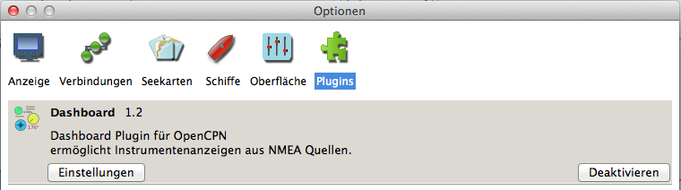
Mit dem Dashboard Plugin können einige Instrumente angezeigt werden. Sind OpenCPN die Daten über einen NMEA 0183 Datenstrom verfügbar, zeigen die Instrumente die entsprechenden Daten. Jedoch weiß das Plugin nicht, welche Daten verfügbar sind. Hier muß der Anwender schon wissen, was angeschlossen ist, meist wird es jedem Fall GPS sein. Man kann natürlich alle Instrumente aktivieren und sehen, was geht.
Das Dashboard Fenster kann frei irgendwo im Kartenbereich positioniert werden. Zieht man das Dashboard Fenster über den rechten oder linken Rand hinaus, wird es
in voller Länge am jeweiligen Rand angedockt.
Unten sind zwei Dashboards in Aktion, eines vertikal und eines horizontal. Die Werkzeugleiste ist versteckt, da der volle Bildschirm gezeigt wird. Packt man das Dashboard
an seiner oberen Leiste mit dem Cursor und zieht es soweit wie möglich nach rechts oder links, dann dockt es am Rand an, wenn man den Cursor los läßt.
Die Kartenanzeige justiert sich neu, so daß kein Teil versteckt wird. Horizontale Dashboards lassen sich ähnlich verschieben. Dieser Prozeß ist
reversibel, in dem man wieder die obere Leiste packt und das Dashboard in die Bildschirm-Mitte zieht.
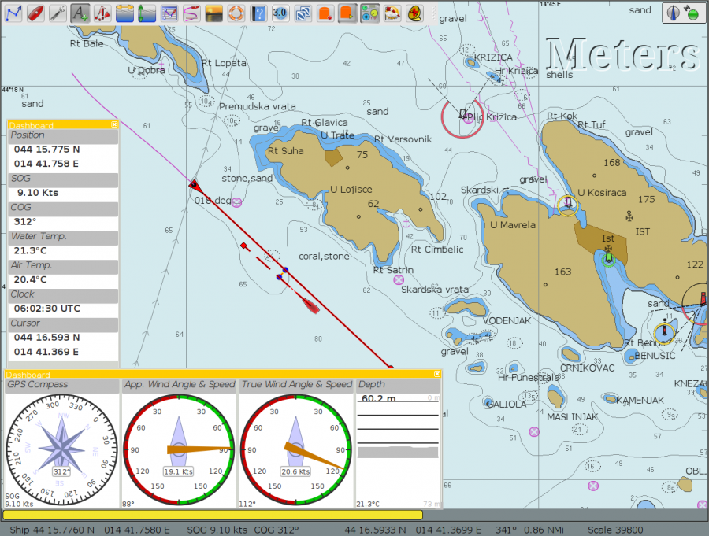
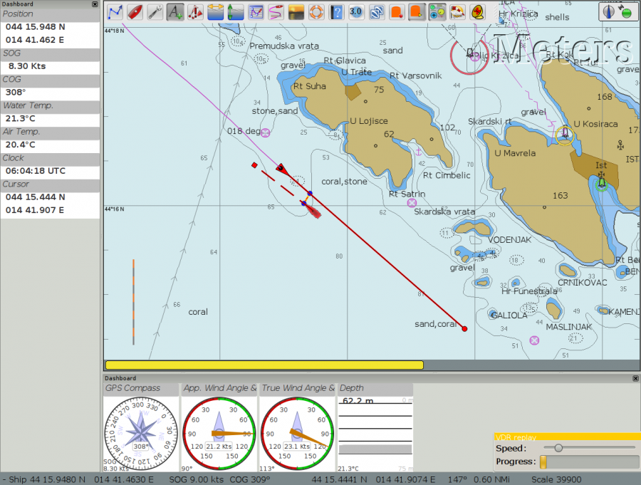
Der Dashboard Eintrag in der Plugin-Lasche
Wurde das Dashboard Plugin in der Plugin Lasche der Einstellungen aktiviert, ist sein Symbol auf der Werkzeugleiste sichtbar und kann mit diesem Symbol an- und abgeschaltet werden.
Mit dem Einstellungen (Preferences) Button können im erscheinenden Dashboard Dialog Einstellungen vorgenommen werden.
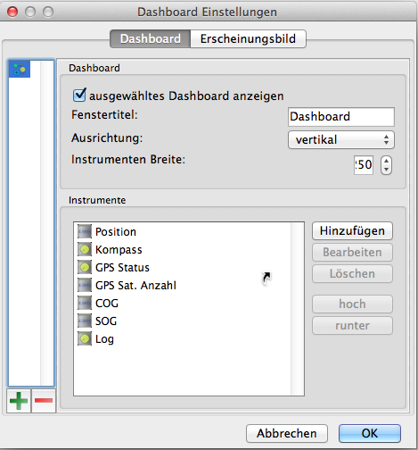
"+" und "-" - Fügt ein Dashboard hinzu oder löscht es.
Ausgewähltes Dashboard anzeigen - Wenn markiert, wird genau dies Dashboard angezeigt.
Fenstertitel - akzeptiert eine Nummer hinter dem Wort "Dashboard", z.B. "Dashboard 4".
Ausrichtung - Ein Dashboard kann entweder vertikal oder horizontal ausgerichtet sein. Ein vertikales Dashboard kann links oder rechts angedockt sein, ein horizontales oben oder unten.
Instrument Breite Macht genau das. Es ist auch die minimale Breite des Dashboard. Das Dashboard Fenster kann mit Ziehen an seinem unteren rechten Ende vergrößert oder verkleinert werden. Das beeinflußt aber nicht die Instrument-Breite.
Das "Instrumente" Fenster - Zeigt die aktiven Instrumente des Dashboards. Sie können mit den rechten Buttons gewählt werden.
Hinzufügen - Dieser Button bringt den "Instrument hinzufügen" Dialog, wo verfügbare Instrumente markiert und zum Instrumente Fenster hinzugefügt werden können.
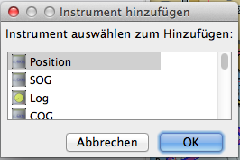
Diese Instrumente sind verfügbar:
Position (Text)
SOG (Text) - Speed Over Ground - Geschwindigkeit über Grund
Speedometer (Instr.) - Logge
COG (Text) - Course Over Ground - Kurs über Grund
Compass (Instr.) - Kompaß
STW (Text) - Speed Through Water - Geschwindigkeit durchs Wasser
HDG (Text) - Heading - Kurs
Apparent wind (Instr.) - Scheinbarer Wind
Wind angle (Instr.) - Windrichtung
Wind speed (Text) - Windgeschwindigkeit
Wind speed (Instr.) - Windgeschwindigkeit
True Wind (Instr.) - Wahrer Wind
Depth (Text) - Tiefe
Depth (Instr.) - Tiefe
Temp (Text) - Temperatur
VMG (Text) - Velocity Made Good to a waypoint - Geschwindigkeit zum Wegpunkt
VMG (Instr.) - Geschwindigkeit zum Wegpunkt
Rudder Angle (Text) - Ruderwinkel
Rudder Angle (Instr.) - Ruderwinkel
GPS in view (Text)- the number of satellites detected - Anzahl gefundener Satelliten
GPS status (Instr.) - GPS Status
Cursor - zeigt die Position des Cursor
Clock - Uhrzeit
Sunrise/Sunset - Sonnenaufgang/-untergang
Moon phase - Mondphase
Bearbeiten - bisher keine Funktion.
Löschen Markieren eines Eintrags im Instrumenten Fenster zum Löschen.
Hoch / Runter Damit wird der markierte Eintrag im Instrumenten Fenster nach oben oder nach unten bewegt zur Sortierung der einzelnen Positionen nach Wunsch des Anwenders.
Lasche Erscheinungsbild
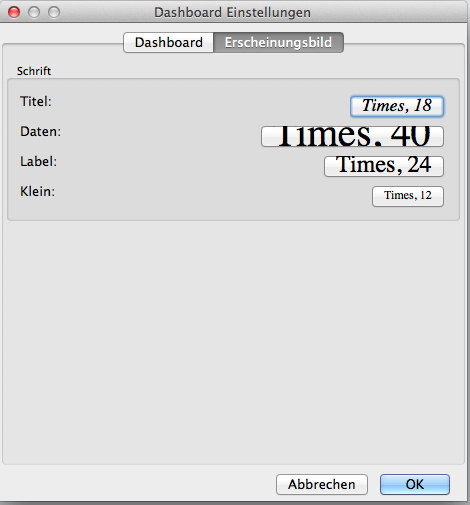
Hier können die gewünschten Schriften für Texte und Daten eingestellt werden.
Mit diesen Einstellungen kann nun der Anwender das Dashboard nach seinen Wünschen konfigurieren.
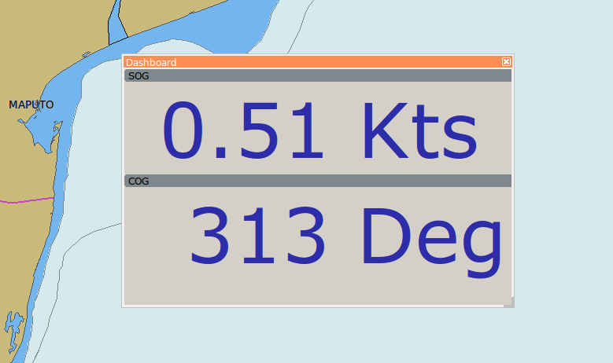
NmeaKonvert Plugin
Manchmal entsprechen die verfügbaren NMEA-Daten nicht denen, die man gerne hätte. Hier kann das NmeaKonvert Plugin helfen. Es ist dafür gedacht, NMEA0183 Sequenzen zu manipulieren oder kann auch fiktive Sequenzen innerhalb festgelegter Zeitspannen erzeugen. Wie üblich wird es in den Einstellungen unter Plugins aktiviert, erzeugt dann aber kein neues Plugin-Symbol auf der Werkzeugleiste. Die Einsstellungen dieses Plugins erfolgen einzig und allein über den Einstellungen-Knopf in der Plugin-Liste:
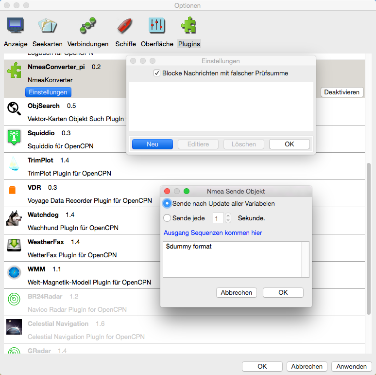
Eine Erklärung der Funktionsweise erfolgt am Besten anhand von Beispielen. Hier wurde eine feste statische $GPRMC Sequenz eingegeben, die jede Sekunde gesendet wird:
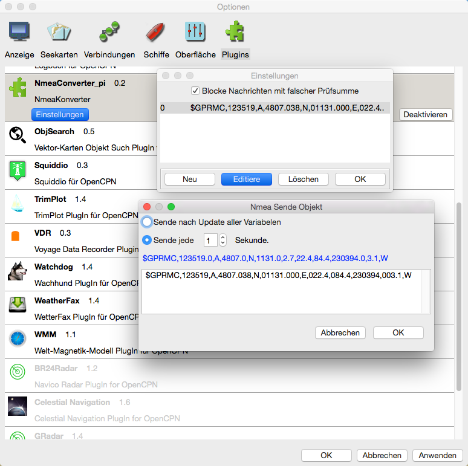
Das Ergebnis sind sekündliche Eintragungen im NMEA Anzeige-Fenster. Als Quelle dieser so angezeigten Daten wird folgerichtig (Virtual:) angegeben. Das ist zunächst nichts Aufregendes, kann aber z.B. zum Testen verwendet werden.
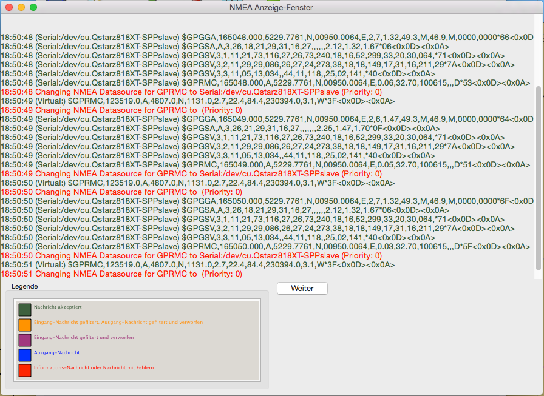
In diesem Beispiel oben war zudem auch ein GPS-Gerät angeschlossen, was zur Folge hatte, daß das Schiffsymbol auf der Karte zwischen dem virtuellen Standort und dem GPS Standort hin und her sprang. Das folgende Beispiel ist etwas komplexer. Der Programmierer wollte aus einem meteorologischem Sensor, das $WIMA Sequenzen sendet (hier virtuell nachgebildet), nur die Temperatur in eine Sequenz $xxMTA extrahieren und ausgeben. Der Temperaturwert und seine Einheit sind in den Feldern 5 und 6 der $WIMA Sequenz.
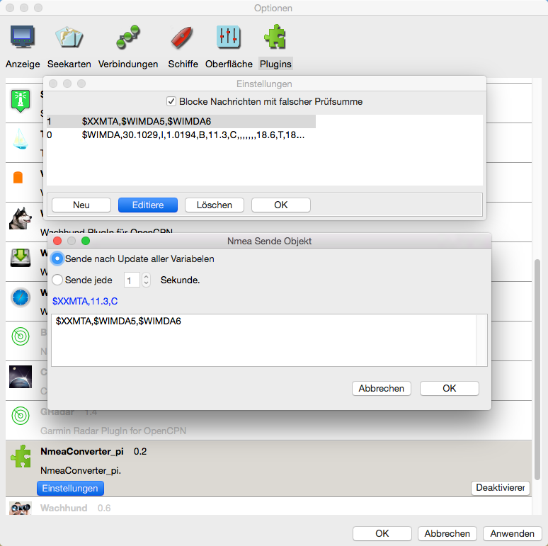
Das Ergebnis zeigt wieder das NMEA Anzeige Fenster:
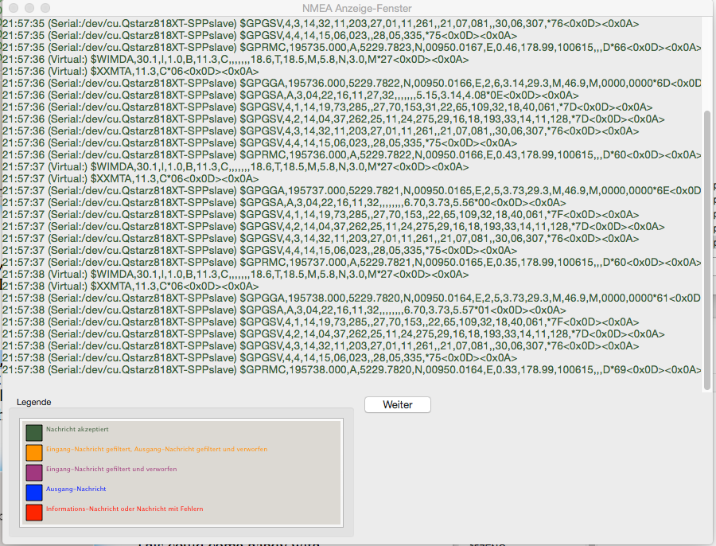
Aus der Sequenz $WIMDA,30.1029,I,1.0194,B,11.3,C,,,,,,,18.6,T,18.5,M,5.8,N,3.0,M*2D wurde also die Sequenz $xxMTA,11.3,C. Das Umwandeln in Fahrenheit würde mit diesem
Eintrag: $XXMTA, 9 / 5 * $WIMA5 + 32, F erfolgen. Auf diese Weise können Berechnungen erfolgen wie Berechnung des wahren Windes aus scheinbarem Wind, Geschwindigkeit
und Kurs. Oder auch Wassertiefen Berechnungen wie Meter in Faden oder Tiefe unter dem Kiel usw. Außer den Grundrechenarten werden folgende mathematischen Funktionen
unterstützt:
abs - der absolute Wert ohne Vorzeichen; ceil - die kleinste Ganzzahl größer oder gleich x; cub - xhoch3, sichere Art für solche Berechnung;
deg - konvertiert von Radian zu Grad; exp - der exponentiale Wert; hvi - Heaviside's Funktion, =0 if x<0, =1 if x>=0; int - die größte Ganzzahl kleiner oder gleich x;
inv - Kehrwert, 1/x; ln - natürlicher Logarithmus; log> - Logarithmus mit Basis 10; rad - konvertiert Grad zu Radian; sgn - Vorzeichen -1 oder +1,
Null ist +1; sqr - xhoch2, sichere Art für solche Berechnung; sqrt - Quadratwurzel; acos - Kehrwert von Kosinus; acsh - Kehrwert von Hyperbolik
Kosinus; asin - Kehrwert von Sinus; asnh - Kehrwert von Hyperbolik Sinus; atan - Kehrwert von Tagens; atnh - Kehrwert von Hyperbolik Tangens;
cos - Kosinus; cosh - Kosinus Hyperbolikus; sin - Sinus; sinc - Kardinal Sinus (Radian); sinh - Sinus Hyperbolikus; tan - Tangens;
tanh - Tangens Hyperbolikus